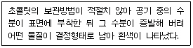
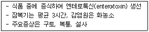

제빵기능사 (2008-02-03 기출문제)
1과목: 제조이론
1. 일반적인 제과작업장의 시설 설명으로 잘못된 것은?
- 조명은 50룩스(lux) 이하가 좋다.
- 방충, 방서용 금속망은 30매쉬(mesh)가 적당하다.
- 벽면은 매끄럽고 청소하기 편리하여야 한다.
- 창의 면적은 바닥면적을 기준하여 30% 정도가 좋다.
(정답률: 79%)

2. 슈 제조시 반죽표면을 분무 또는 침지시키는 이유가 아닌 것은?
- 껍질을 얇게 한다.
- 팽창을 크게 한다.
- 기형을 방지 한다.
- 제품의 구조를 강하게 한다.
(정답률: 65%)
3. 케이크에서 설탕의 역할과 거리가 먼 것은?
- 감미를 준다.
- 껍질색을 진하게 한다.
- 수분 보유력이 있어 노화가 지연된다.
- 제품의 형태를 유지시킨다.
(정답률: 73%)
4. 밀가루:계란:설탕:소금 = 100:166:166:2를 기본 배합으로 하여 적정 범위 내에서 각 재료를 가감하여 만드는 제품은?
- 파운드케이크
- 엔젤푸드케이크
- 스펀지케이크
- 머랭쿠키
(정답률: 66%)
5. 비중컵의 무게 40g, 물을 담은 비중컵의 무게 240g, 반죽을 담은 비중컵의 무게 180g일 때 반죽의 비용은?
- 0.2
- 0.4
- 0.6
- 0.7
(정답률: 69%)
6. 엔젤푸드케이크 제조시 팬에 사용하는 이형제로 가장 적합한 것은?
- 쇼트닝
- 밀가루
- 라드
- 물
(정답률: 61%)
7. 카스테라의 굽기 온도로 가장 적합한 것은?
- 140~150℃
- 180~190℃
- 220~240℃
- 250~270℃
(정답률: 81%)
8. 케이크도넛 제품에서 반죽 온도의 영향으로 나타나는 현상이 아닌 것은?
- 팽창과잉이 일어난다.
- 모양이 일정하지 않다.
- 흡유량이 많다.
- 표면이 꺼칠하다.
(정답률: 47%)
9. 커스터드푸딩을 컵에 채워 몇 ℃의 오븐에서 중탕으로 굽는 것이 가장 적당한가?
- 160~170℃
- 190~200℃
- 210~220℃
- 230~240℃
(정답률: 72%)
10. 설탕 공예용 당맥 제조시 설탕의 재결정을 막기 위해 첨가하는 재료는?
- 중조
- 주석산
- 포도당
- 베이킹파우더
(정답률: 71%)
11. 다음 제품 중 일반적으로 유지를 사용하지 않는 제품은?
- 마블케이크
- 파운드케이크
- 코코아케이크
- 엔젤푸드케이크
(정답률: 65%)
12. 흰자 100에 대하여 설탕 180의 비율로 만든 머랭으로서 구웠을 때 표면에 광택이 나고 하루쯤 두었다가 사용해도 무방한 머랭은?
- 냉제 머랭(cold meringue)
- 온제 머랭(hot meringue)
- 이탈리안 머랭(italian meringue)
- 스위스 머랭(swiss meringue)
(정답률: 57%)
13. 튀김기름의 품질을 저하시키는 요인으로만 나열된 것은?
- 수분, 탄소, 질소
- 수분, 공기, 반복 가열
- 공기, 금속, 토코페롤
- 공기, 탄소, 사사몰
(정답률: 72%)
14. 머랭(meringue)을 만드는 주요 재료는?
- 달걀 흰자
- 전란
- 달걀 노른자
- 박력분
(정답률: 90%)
15. 다음 중 쿠키의 퍼짐이 작아지는 원인이 아닌 것은?
- 반죽에 아주 미세한 입자의 설탕을 사용한다.
- 믹싱을 많이 하여 글루텐이 많아졌다.
- 오븐 온도를 낮게 하여 굽는다.
- 반죽의 유지 함량이 적고 산성이다.
(정답률: 44%)
16. 데니시페이스트리에서 롤인 유지함량이 및 접수 횟수에 대한 내용 중 틀린 것은?
- 롤인 유지함량이 증가할수록 제품 부피는 증가한다.
- 롤인 유지함량이 적어지면 같은 접기 횟수에서 제품의 부피가 감소한다.
- 같은 롤인 유지함량에서는 접기 횟수가 증가할수록 부피는 증가하다 최고점을 지나면 감소한다.
- 롤인 유지함량이 많은 것이 롤인 유지함량이 적은 것보다 접기 횟수가 증가함에 따라 부피가 증가하다가 최고점을 지나면 감소하는 현상이 현저하다.
(정답률: 66%)
17. 빵 반죽의 흡수에 대한 설명으로 잘못된 것은?
- 반죽 온도가 높아지면 흡수율이 감소된다.
- 연수는 경수보다 흡수율이 증가한다.
- 설탕 사용량이 많아지면 흡수율이 감소된다.
- 손상전분이 적량 이상이면 흡수율이 증가한다.
(정답률: 47%)
18. 빵류의 2차 발효실 상대습도가 표준습도보다 낮을 때 나타나는 현상이 아닌 것은?
- 반죽에 껍질 형성이 빠르게 일어난다.
- 오븐에 넣었을 때 팽창이 저해된다.
- 껍질색이 불균일하게 되기 쉽다.
- 수포가 생기거나 질긴 껍질이 되기 쉽다.
(정답률: 49%)
19. 다음 중 빵의 노화가 가장 빨리 발생하는 온도는?
- -18℃
- 0℃
- 20℃
- 35℃
(정답률: 71%)
20. 스펀지/도법에서 스펀지의 표준온도로 가장 적합한 것은?
- 18~20℃
- 23~25℃
- 27~29℃
- 30~32℃
(정답률: 60%)
2과목: 재료과학
21. 냉동반죽법의 단점이 아닌 것은?
- 휴일작업에 미리 대처할 수 없다.
- 이스트가 죽어 가스 발생력이 떨어진다.
- 가스 보유력이 떨어진다.
- 반죽이 퍼지기 쉽다.
(정답률: 65%)
22. 오븐 온도가 낮을 때 제품에 미치는 영향은?
- 2차 발효가 지나친 것과 같은 현상이 나타난다.
- 껍질이 급격히 형성된다.
- 제품의 옆면이 터지는 현상이다.
- 제품의 부피가 작아진다.
(정답률: 48%)
23. 페이스트리 성형 자동밀대(파이롤러)에 대한 설명 중 맞는 것은?
- 기계를 사용하므로 밀어 펴기의 반죽과 유지와의 경도는 가급적 다른 것이 좋다.
- 기계에 반죽이 달라붙는 것을 막기 위해 덧가루를 많이 사용한다.
- 기계를 사용하여 반죽과 유지는 따로 따로 밀어서 편뒤 감싸서 밀어 펴기를 한다.
- 냉동휴지 후 밀어 펴면 유지가 굳어 갈라지므로 냉장휴지를 하는 것이 좋다.
(정답률: 59%)
24. 팬닝시 주의할 사항으로 적합하지 않은 것은?
- 팬닝전 온도를 적정하고 고르게 한다.
- 틀이나 철판의 온도를 25℃로 맞춘다.
- 반죽의 이음매가 틀의 바닥에 늘이도록 팬닝한다.
- 반죽의 무게와 상태를 정하여 비용적에 맞추어 적당한 반죽량을 넣는다.
(정답률: 80%)
25. 생산액이 2000000원, 외부가치가 1000000원, 생산가치가 500000원, 인건비가 800000원일 때 생산가치율은?
- 20%
- 25%
- 35%
- 40%
(정답률: 52%)
26. 발효에 미치는 영향이 가장 적은 것은?
- 이스트양
- 온도
- 소금
- 유지
(정답률: 66%)
27. 반죽법에 대한 설명 중 틀린 것은?
- 스펀지법은 반죽을 2번에 나누어 믹싱하는 방법으로 중종법이라고 한다.
- 직접법은 스트레이트법이라고 하며, 전재료를 한번에 넣고 반죽하는 방법이다.
- 비상반죽법은 제조시간을 단축할 목적으로 사용하는 반죽법이다.
- 재반죽법은 직접법의 변형으로 스트레이트법 장점을 이용한 방법이다.
(정답률: 58%)
28. 냉동 반죽법의 냉동과 해동 방법으로 옳은 것은?
- 급속냉동, 급속해동
- 급속냉동, 완만해동
- 완만냉동, 급속해동
- 완만냉동, 완만해동
(정답률: 84%)
29. 포장 전 빵의 온도가 너무 낮을 때는 어떤 현상이 일어나는가?
- 노화가 빨라진다.
- 썰기(slice)가 나쁘다.
- 포장지에 수분이 응축된다.
- 곰팡이, 박테리아의 번식이 용이하다.
(정답률: 72%)
30. 빵의 부피가 가장 크게 되는 경우는?
- 숙성이 안된 밀가루를 사용할 때
- 물을 적게 사용할 때
- 반죽이 지나치게 믹싱 되었을 때
- 발효가 더 되었을 때
(정답률: 69%)
3과목: 영양학
31. 생란의 수분함량이 72%이고, 분말계란의 수분함량이 4%라면, 생란 200kg으로 만들어지는 분말계란 중량은?
- 52.8kg
- 54.3kg
- 56.8kg
- 58.3kg
(정답률: 26%)
32. 단백질을 분해하는 효소는?
- 아밀라아제(amylase)
- 리파아제(lipase)
- 프로테아제(protease)
- 찌마아제(zymase)
(정답률: 60%)
33. 우유에 함유된 질소화합물 중 가장 많은 양을 차지하는 것은?
- 시스테인
- 글리아딘
- 카제인
- 락토알부민
(정답률: 80%)
34. 지방은 지방산과 무엇이 결합하여 이루어지는가?
- 아미노산
- 나트륨
- 글리세롤
- 리보오스
(정답률: 70%)
35. 강력분의 특성으로 틀린 것은?
- 중력분에 비해 단백질 함량이 많다.
- 박력분에 비해 글루텐 함량이 적다.
- 박력분에 비해 점탄성이 크다.
- 겨질 소맥을 원료로 한다.
(정답률: 73%)
36. 생이스트(fresh yeast)에 대한 설명으로 틀린 것은?
- 중량의 65~70%가 수분이다.
- 20℃ 정도의 상온에서 보관해야 한다.
- 자기소화를 일으키기 쉽다.
- 곰팡이 등의 배지 역할을 할 수 있다.
(정답률: 64%)
37. 다음 중 찬물에 잘 녹는 것은?
- 한천(agar)
- 씨엠시(CMC)
- 젤라틴(gelatin)
- 일반 펙틴(pectin)
(정답률: 59%)
38. 다음과 같은 조건에서 나타나는 현상과 밑줄 친 물질을 바르게 연결한 것은?

- 펫브룸(fat bloom)-카카오메스
- 펫브룸(fat bloom)-글리세린
- 슈가브룸(sugar bloom)-카카오버터
- 슈가브룸(sugar bloom)-설탕
(정답률: 81%)
39. 패리노그래프(Farinograph)의 기능 및 특징이 아닌 것은?
- 흡수율 측정
- 믹싱 시간 측정
- 500 B.U.를 중심으로 그래프 작성
- 전분 호화력 측정
(정답률: 71%)
40. 일반적으로 양질의 빵속을 만들기 위한 아밀로그래피의 범위는?
- 0~150 B.U.
- 200~300 B.U.
- 400~600 B.U.
- 800~1000 B.U.
(정답률: 71%)
41. 다음 중 유지의 경화 공정과 관계가 없는 물질은?
- 불포화지방산
- 수소
- 콜레스테롤
- 촉매제
(정답률: 45%)
42. 다음 중 전분당이 아닌 것은?
- 물엿
- 설탕
- 포도당
- 이성화당
(정답률: 32%)
43. 영구적 경수(센물)를 사용할 때의 조치로 잘못된 것은?
- 소금 증가
- 효소 강화
- 이스트 증가
- 광물질 감소
(정답률: 48%)
44. 다음 중 글레이즈(glaze) 사용시 가장 적합한 온도는?
- 15℃
- 25℃
- 35℃
- 45℃
(정답률: 65%)
45. 다음 중 이당류가 아닌 것은?
- 포도당
- 맥아당
- 설탕
- 유당
(정답률: 61%)
46. 비타민과 생체에서의 주요 기능이 잘못 연결된 것은?
- 비타민 B1-당질대사의 보조 효소
- 나이아신-항 펠라그리(Pellagra)인자
- 비타민K-항 혈액응고 인자
- 비타민A-항 빈혈인자
(정답률: 57%)
47. 유당불내증이 있을 경우 소장 내에서 분해가 되어 생성되지 못하는 단당류는?
- 설탕(sucrose)
- 맥아당(maltose)
- 과당(fructose)
- 갈락토오스(galactose)
(정답률: 65%)
48. 한 개의 무게가 50g인 과자가 있다. 이 과자 100g 중에 탄수화물 70g, 단백질 5g, 지방 15g, 무기질 4g, 물 6g이 들어 있다면 이 과자 10개를 먹을 때 얼마의 열량을 낼 수 있는가?
- 1230 kcal
- 2175 kcal
- 2750 kcal
- 1800 kcal
(정답률: 68%)
49. 다음 중 효소와 활성물질이 잘못 짝지어진 것은?
- 펩신-염산
- 트립신-트립신활성효소
- 트립시노겐-지방산
- 키모트립신-트립신
(정답률: 45%)
50. 다음 중 인체 내에서 합성할 수 없으므로 식품으로 섭취해야 하는 지방산이 아닌 것은?
- 리놀레산(linoleic acid)
- 리놀렌산(linolenic acid)
- 올레산(oleic acid)
- 아라키돈산(arachidonic acid)
(정답률: 60%)
4과목: 식품위생학
51. 다음에서 설명하는 균은?

- 살모넬라균
- 포도상구균
- 클로로스트리디움 보툴리늄
- 장염 비브리오균
(정답률: 59%)
52. 밀가루 등으로 오인되어 식중독이 유발된 사례가 있으며 습진성 피부질환 등의 증상을 보이는 것은?
- 수은
- 비소
- 납
- 아연
(정답률: 55%)
53. 다음 중 곰팡이 독이 아닌 것은?
- 아플라톡신
- 시트라닌
- 삭시톡신
- 파툴린
(정답률: 60%)
54. 단백질 식품이 미생물의 분해 작용에 의하여 형태, 색택, 경도, 맛 등의 본래의 성질을 잃고 악취를 발생하거나 유해물질을 생성하여 먹을 수 없게 되는 현상은?
- 변패
- 산패
- 부패
- 발효
(정답률: 83%)
55. 저장미에 발생한 곰팡이가 원인이 되는 황변미 현상을 방지하기 위한 수분 함량은?
- 13 이하
- 14~15%
- 15~17%
- 17% 이상
(정답률: 57%)
56. 미생물에 의한 부패나 변질을 방지하고 화학적인 변화를 억제하며 보존성을 높이고 영양가 및 신선도를 유지하는 목적으로 첨가하는 것은?
- 감미료
- 보존료
- 산미료
- 조미료
(정답률: 81%)
57. 인수공통전염병 중 오염된 우유나 유제품을 통해 사람에게 감염되는 것은?
- 탄저
- 결핵
- 야토병
- 구제역
(정답률: 57%)
58. 다음 중 일반적으로 잠복기가 가장 긴 것은?
- 유행성 간염
- 디프테리아
- 페스트
- 세균성 이질
(정답률: 56%)
59. 다음 중 감염형 식중독을 일으키는 것은?
- 보툴리누스균
- 살모넬라균
- 포도상구균
- 고초균
(정답률: 52%)
60. 빵 및 케이크류에 사용이 허가된 보존료는?
- 탄산수소나트륨
- 포름알데히드
- 탄산암모늄
- 프로피온산
(정답률: 44%)
이유: 제과작업장에서는 밝은 조명이 필요하지 않으며, 너무 강한 조명은 제품의 색상을 왜곡시키고 작업자의 눈에 부담을 줄 수 있기 때문에 50룩스 이하가 적당하다. 또한, 조명이 너무 강하면 제품의 표면이 노출된 부분이 빛에 의해 빛나는 현상이 발생하여 제품의 외관을 심하게 변형시킬 수 있다.